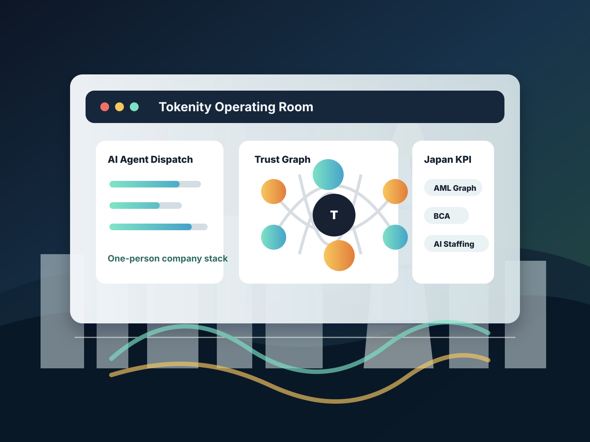

投資論點
不是 AI 客服公司，而是信任層公司。
公司應以防詐、合規、鏈上情報、智能合約審查、可信證據與 AI 營運為主軸。AI 客服有價值，但不是核心股權故事。
股東決策室
把 Tokenity 變成可審查、可銷售、可擴張的一人公司。
本區補強股東最在意的問題：為什麼現在進入日本、先賣什麼、如何交付、錢花在哪裡、何時擴編，以及哪些事絕對不能碰。
董事會儀表板
第一年只追蹤會改變估值的指標。
客戶場景
用具體場景讓海外股東看懂營收來源。
每個場景都能先用 paid discovery 成交，再擴成 PoC、月費監控、API 或 AI operator 長約。
公開錨點
Tokenity 法人與產品規劃
產品系統
全部規劃事業線
第一年度應先銷售可包裝的 PoC 專案與月費情報服務，再逐步投入重型平台開發。
美金收費模型
用海外股東看得懂的方式定價。
Tokenity 採 B2B enterprise、PoC、月費與用量費混合制。STO/RWA 與鏈上合規服務應以專案價與長約為主，不以低價 SaaS 競爭。
深度營運藍圖
從 STO/RWA 策略到可交付產品。
本區把 Tokenity 的商業模式拆成可銷售、可審查、可交付、可擴張的營運系統，讓股東能看見公司如何從一人公司變成機構級信任科技平台。
STO/RWA 交付堆疊
12 個月 KPI
一人公司
AI agents 取代部門。
CEO 保留決策權。Agents 處理可重複的研究、寫作、分析、QA、跟進與規劃工作；受監管或高風險內容交由真人專家審閱。
執行路線圖
開發進度與預算
日本市場產值
商業價值估算
可服務機會來自日本 AI、資安、DX、區塊鏈、暗号資産合規、RegTech 與 IT 人力市場的交集。本模型採可服務市場區間，而不是將所有 TAM 直接相加。
其他公司分析
同業地圖與戰略空白
Tokenity Japan 不應複製任何單一同業。真正的戰略空白，是在日本市場同時整合鏈上信任、AI 風險情報、智能合約審查、可信證據與 AI 人力派遣。
風險控管
執行護欄
立即行動